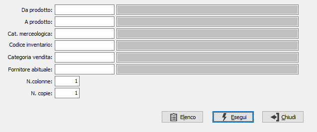
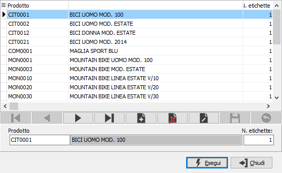

Stampa etichette barcode
Il programma consente di stampare le etichette dei prodotti riportando il codice a barre.

DA PRODOTTO: eventuale codice dell'articolo, presente in anagrafica Prodotti, da cui si desidera iniziare la stampa. Confermando a vuoto, la stampa inizia con il primo prodotto valido. Sul campo è attiva la ricerca (F9) sull’anagrafica prodotti.
A PRODOTTO: eventuale codice dell'articolo, presente in anagrafica Prodotti, a cui si desidera terminare la stampa. Confermando a vuoto, la stampa termina con l’ultimo valido. Sul campo è attiva la ricerca (F9) sull’anagrafica prodotti.
CAT. MERCEOLOGICA: eventuale codice della categoria merceologica per cui si vuole effettuare la stampa. Sul campo sono attive le funzioni di ricerca (F9) sulla tabella stessa.
CODICE INVENTARIO: eventuale codice Inventario per cui si vuole effettuare la stampa. Sul campo sono attive le funzioni di ricerca (F9) sulla tabella stessa.
CAT. VENDITA: eventuale codice della categoria di vendita per cui si vuole effettuare la stampa. Sul campo sono attive le funzioni di ricerca (F9) sulla tabella stessa.
FORNITORE ABITUALE: eventuale codice del fornitore abituale del prodotto per cui si vuole effettuare la stampa. Sul campo sono attive le funzioni di ricerca (F9) sulla tabella stessa.
NUMERO COLONNE: definisce il numero di colonne su cui effettuare la stampa.
NUMERO COPIE: definisce il numero di copie da stampare per ogni etichetta.
La pressione del pulsante Elenco utilizza i parametri di selezione per creare una finestra in cui vengono elencati gli articoli oggetto della selezione, riportando il numero di etichette da stampare per ogni articolo; in questa finestra è possibile modificare il numero di etichette per ogni articolo, eliminare o aggiungere prodotti. All'uscita dalla finestra eseguendo la stampa saranno stampati i dati elencati nella finestra.
